<!DOCTYPE html>
<html lang="es"></html>
<head>
  <meta charset="utf-8">
  <meta name="viewport" content="width= device-width, initial-scale=1">
  <meta http-equiv="X-UA-Compatible" content="IE=edge,chrome=1">
  <meta name="HandheldFriendly" content="true"/>
  <meta name="MobileOptimized" content="320"/>
  <meta name="theme-color" content="#0096D9"/>
  <meta name="msapplication-TileColor" content="#0096D9"/>
  <meta name="msapplication-TileImage" content="./img/marathons-logo.svg"/>
  <meta name="apple-mobile-web-app-capable" content="yes"/>
  <meta name="apple-mobile-web-app-status-bar-style" content="default"/>
  <link rel="apple-touch-startup-image" href="./img/marathons-logo.svg"/>
  <link rel="icon" type="image/x-icon" href="./img/favicon.ico"/>
  <link rel="icon" type="image/png" href="./img/marathons-logo.png"/>
  <link rel="apple-touch-icon" href="./img/marathons-logo.svg"/>
  <link rel="author" type="text/plain" href="./humans.txt"/>
  <link rel="sitemap" type="application/xml" title="Sitemap" href="./sitemap.xml"/>
  <title>Orígenes - M A R A T Ó N</title>
  <meta name="description" content="En esta sección te explicamos todo sobre el origen de la Maratón.">
  <meta name="application-name" content="Orígenes - M A R A T Ó N">
  <link rel="stylesheet" href="./style.css">
</head>
<body>
  <header class="Header">
    <section class="Header-container">
      <h1 class="Logo"><a class="Logo-link" href="./">Maratones</a></h1><a class="Panel-button" href="#">
        <button class="hamburger hamburger--spring" type="button"><span class="hamburger-box"><span class="hamburger-inner"></span></span></button></a>
      <aside class="Panel">
        <nav class="Menu">
          <ul class="Menu-listItem">
            <li class="Menu-item"><a class="Menu-link" href="index.html">Inicio</a></li>
            <li class="Menu-item"><a class="Menu-link" href="acerca.html">Acerca</a></li>
            <li class="Menu-item"><a class="Menu-link" href="maratones.html">Maratones</a></li>
            <li class="Menu-item"><a class="Menu-link" href="mujeres.html">Mujeres</a></li>
            <li class="Menu-item"><a class="Menu-link" href="el-mas-veloz.html">El mas Veloz</a></li>
            <li class="Menu-item"><a class="Menu-link" href="contacto.html">Contacto</a></li>
          </ul>
        </nav>
      </aside>
    </section>
  </header>
  <main class="About">
    <article class="Poster u-firstContent" style="background-image: url(./img/acerca-runners-steps.jpg);">
      <div class="Poster--opacity">
        <h2 class="Poster-title"><span>MARATÓN</span><br/><span>42.195km</span></h2>
      </div>
    </article>
    <article class="MarathonHistory">
      <div class="MarathonHistory-item c1xr1"></div>
      <div class="MarathonHistory-item c2xr1">
        <p><b>Un maratón</b> o <b>una maratón</b> es una carrera de larga distancia que consiste en correr <b>42.195 km</b>.</p>
      </div>
      <div class="MarathonHistory-item c2xr2">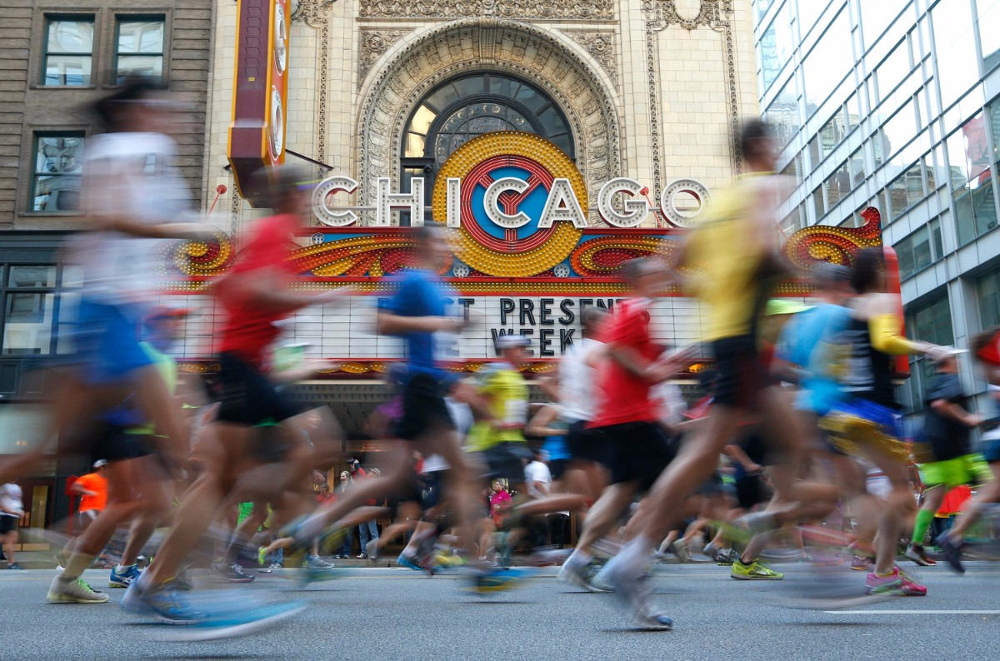</div>
      <div class="MarathonHistory-item c3xr1">
        <p class="u-center"><b>E L&nbsp;&nbsp;M I T O</b><br><b>Batalla de Maratón (490 AC)</b></p>
      </div>
      <div class="MarathonHistory-item c1xr1">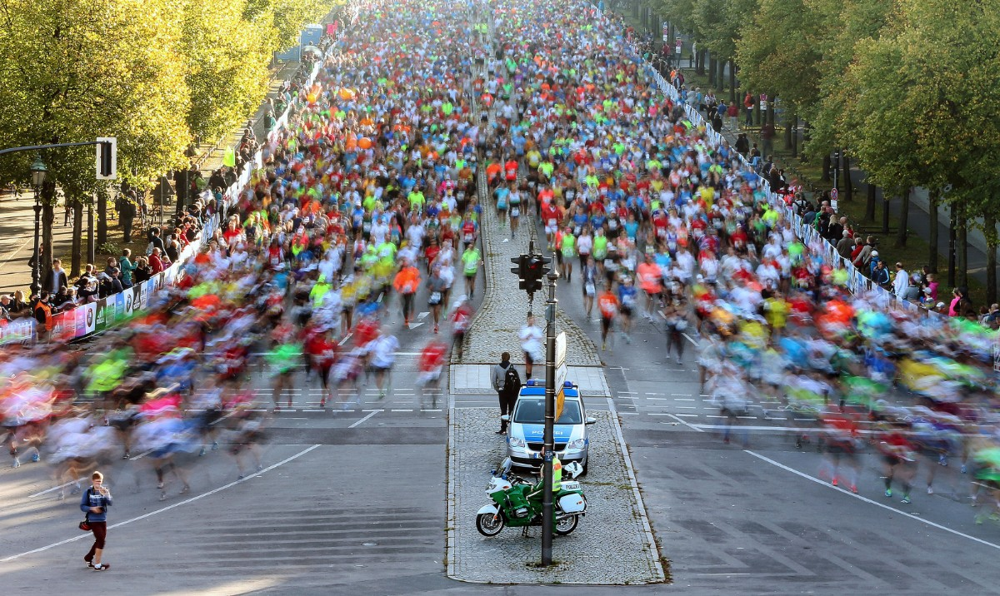</div>
      <div class="MarathonHistory-item c1xr1">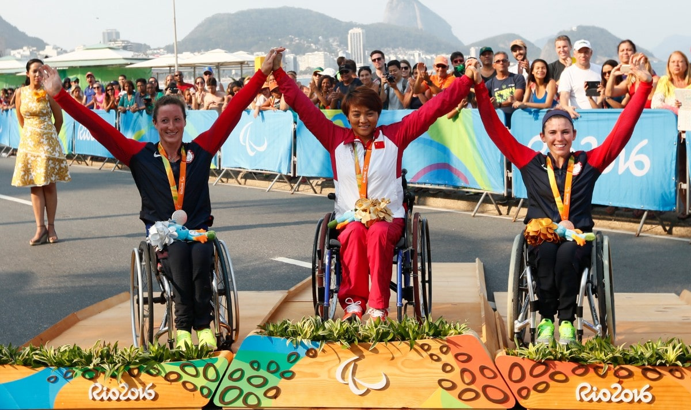</div>
      <div class="MarathonHistory-item c1xr1"></div>
      <div class="MarathonHistory-item c2xr1">
        <p>El nombre proviene de la leyenda de <b>Filípides</b>, un mensajero griego, que habría sido enviado desde la bahía de Maratón a la metropolis de Atenas (40kms) con el objetivo de anunciar la victoria de los griegos frente a los persas.</p>
      </div>
      <div class="MarathonHistory-item c1xr2">
        <p>Si no llegaba a tiempo, los atenienses quemarían la ciudad y matarían a los niños ante la creencia de haber sido derrotados.</p>
      </div>
      <div class="MarathonHistory-item c2xr2">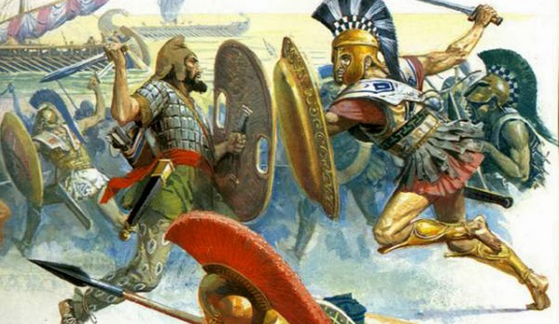</div>
      <div class="MarathonHistory-item c2xr2">
        <p>Afortunadamente, habría logrado la hazaña, y luego de correr los 40kms con sus últimas fuerzas, se habría desplomado frente a Atenas ante el grito de <b><i>nenikhamen o nike</i></b>, que significa <b><i>“hemos vencido”</i></b>.</p>
      </div>
      <div class="MarathonHistory-item c1xr2"></div>
      <div class="MarathonHistory-item c3xr1">
        <p>Aunque la leyenda es muy bonita, existen algunos debates sobre la precisión de estos hechos, ya que existirían registros de que Filípides habría corrido, antes de la Batalla de Maratón, desde Atenas hasta Esparta (240km) a fin de solicitar refuerzos y luego volvió.</p>
      </div>
      <div class="MarathonHistory-item c3xr1">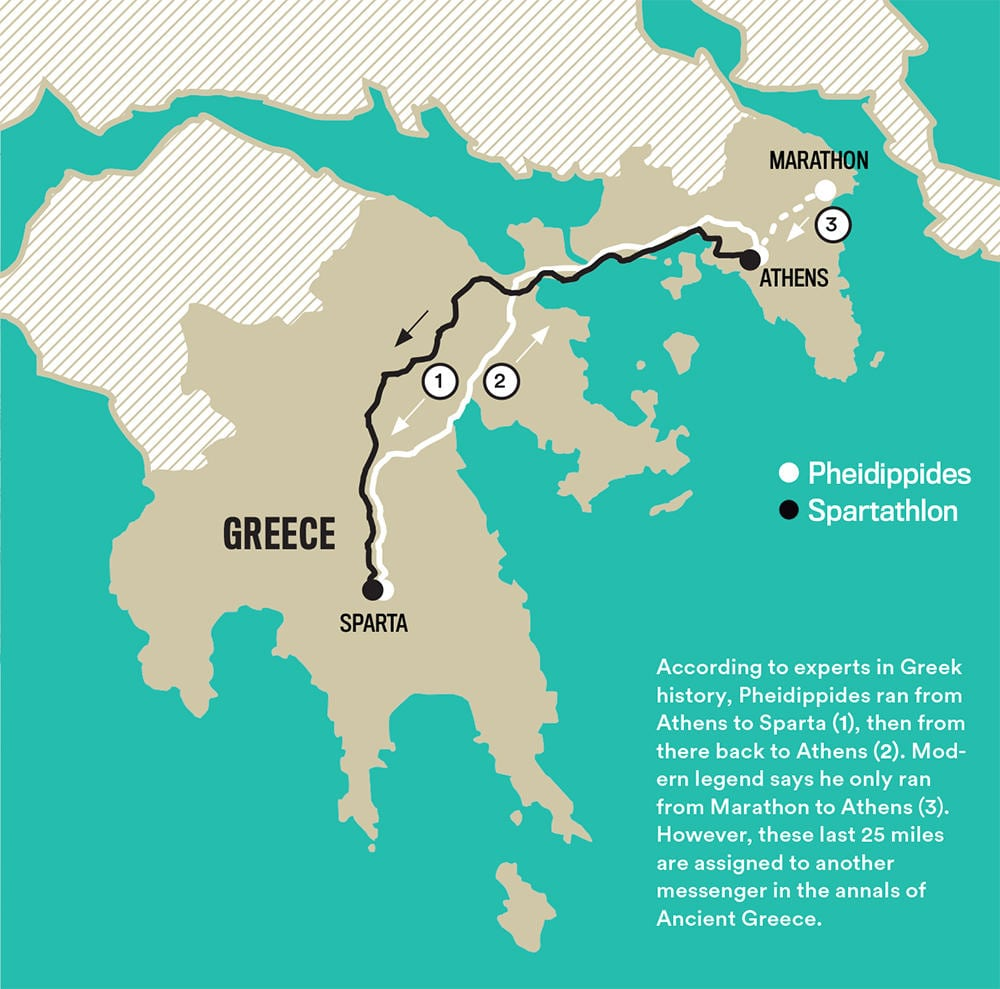</div>
      <div class="MarathonHistory-item c3xr1">
        <p class="u-center"><b>E N&nbsp;&nbsp;J U E G O S&nbsp;&nbsp;O L Í M P I C O S</b></p>
      </div>
      <div class="MarathonHistory-item c1xr2">
        <p>Forma parte del programa de atletismo desde <b>Atenas 1896</b>, en la categoría <b>masculina</b>, y desde <b>Los Ángeles 1984</b>, en la <b>femenina</b>.</p>
      </div>
      <div class="MarathonHistory-item c2xr2">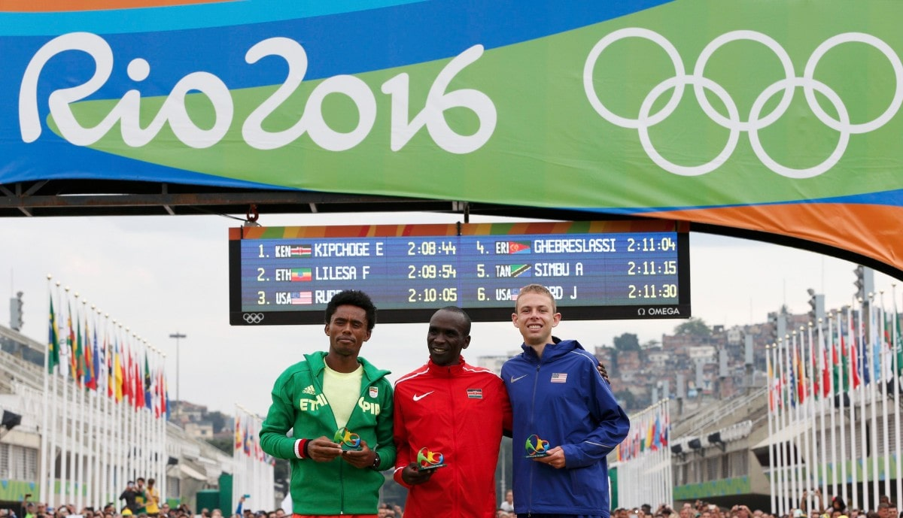</div>
      <div class="MarathonHistory-item c1xr1">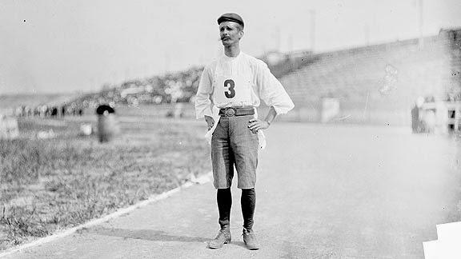</div>
      <div class="MarathonHistory-item c2xr1">
        <p>El primer maratón olímpico se realizó el <b>10 de abril de 1896</b> y su ganador fue <b>Spyridon Louis</b>, un griego que corrió desde la llanura de Maratón hasta el estadio olímpico de Atenas (<b>40 kms</b>) en <b>2:58:50 hrs</b>.</p>
      </div>
      <div class="MarathonHistory-item c1xr2">
        <p>Sin embargo, la distancia fue variando a lo largo de los años, hasta que en 1908 en los Juegos de Londres para que la Reina pudiera ver la salida desde el Castillo Windsor extendieron la distancia a los <b>42.195 km</b>.</p>
      </div>
      <div class="MarathonHistory-item c2xr2">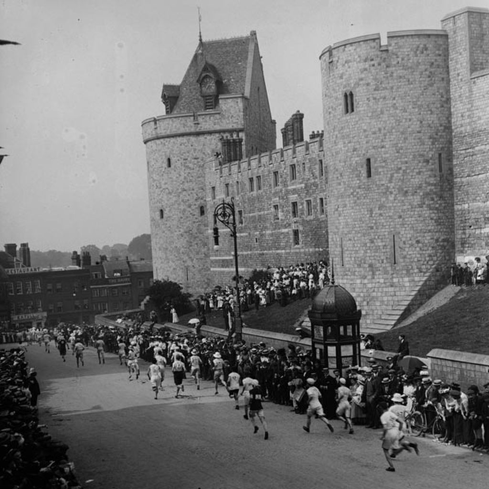</div>
      <div class="MarathonHistory-item c2xr1">
        <p>Finalmente, en 1921 la Asociación Internacional de Federaciones Atléticas fijó en forma definitiva que, la maratón consistiría en <b>42.195 km o 26.2 millas</b>.</p>
      </div>
      <div class="MarathonHistory-item c1xr1"></div>
    </article>
    <aside class="WindowGallery">
      <header class="WindowGallery-title">
        <h2>4 2 . 1 9 5<br>k m</h2>
      </header><b class="WindowGallery-clipPath"></b>
      <figure class="WindowGallery-item">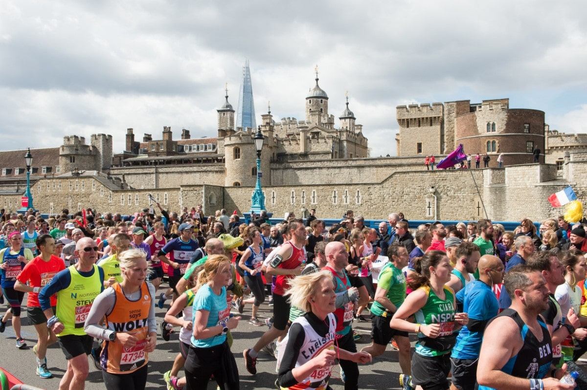</figure>
      <figure class="WindowGallery-item">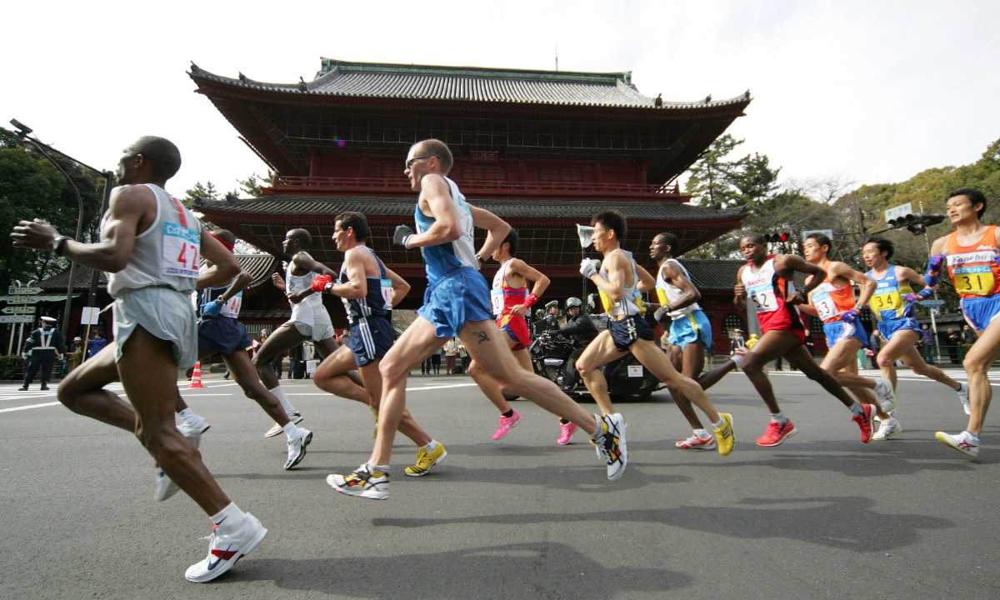</figure>
      <figure class="WindowGallery-item">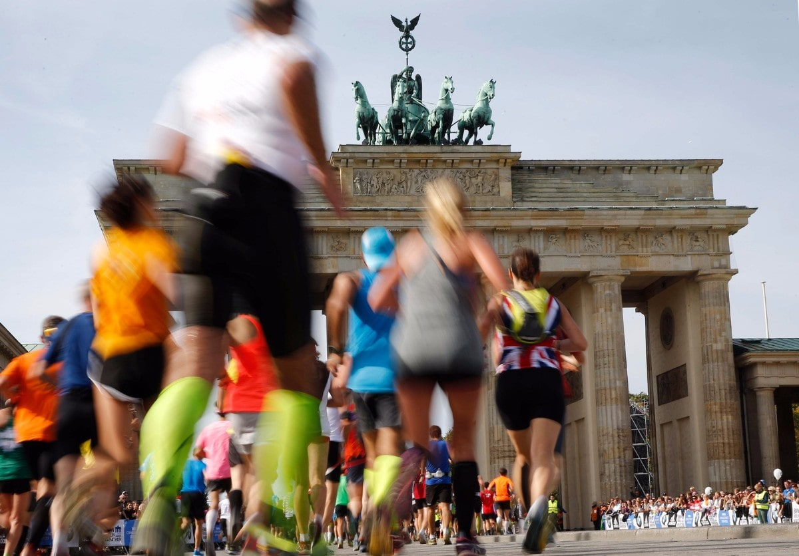</figure>
      <figure class="WindowGallery-item">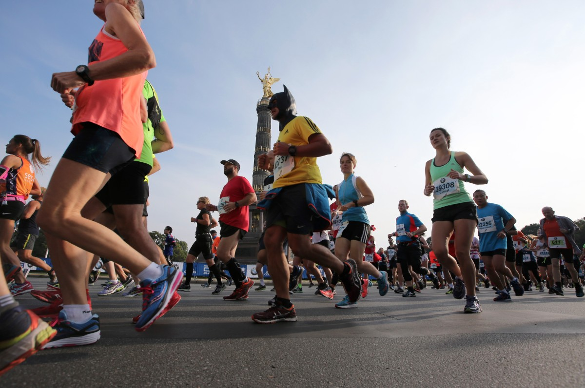</figure>
    </aside>
  </main>
  <script src="./script.js"></script>
</body>